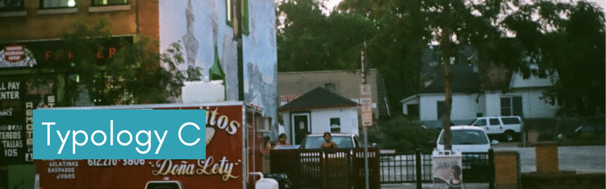

Type C census tracts have historically been white, working-class neighborhoods with an affordable housing stock that has been mostly built between the end of World War II and mid-1970s. These tracts are home to residents with moderate incomes that are slightly below the study area medians. Income trends in these areas resemble the trends in the study area, where median household incomes have finally stabilized after a sharp decline during the 2000s.
Most of the housing stock in these areas comprise single-story, rambler-style homes that make it easier for residents to age in place. So it is not surprising to see that the percentage of residents 65 years or older in these areas is a lot higher than the rest of the study area and is increasing very rapidly. While the total population of these areas has barely changed, its racial composition is noticeably different. These tracts, which have remained predominantly white until the 2000s, has been experiencing a steady inflow of residents of color during the study period. The percentage of people of color in these tracts has exceeded the study area average by the end of the study period.
Housing costs in Type C tracts remain below the study area. However, housing market trends in these tracts differ in owner and rental markets. Unlike most of the study area, where median home values have picked up after the recession, median home values in Type C tracts have continued to decline during the 2010s. In rental markets, however, trends in these tracts resemble the study area trends, with median gross rents increasing after the recession, following sharp declines during the 2000s. If these trends in declining median home values persist, Type C census tracts might face the risk of deterioration. Maintaining the quality of housing is essential for fending off this risk. Since these census tracts have modest incomes and growing numbers of fixed-income retirees, they might face issues related to deferred maintenance. Housing rehabilitation, maintenance, and weatherization programs might help residents catch up with deferred maintenance and enable home improvements necessary to maintain the quality of housing in Type C tracts.
Ensuring the vitality of these census tracts might also require public subsidies that can help stimulate market demand in these areas. For instance, strategic place-making investments that take advantage of growing racial and cultural diversity can boost private investment in Type C tracts. Similarly, supporting and attracting businesses oriented toward the needs of a more racially diverse clientele might not only enhance the economic standing of these areas, but also appeal to the changing preferences of the residents.
dulce et decorum est. dulce et decorum est. dulce et decorum est.
dulce et decorum est. dulce et decorum est. dulce et decorum est.
As the percentage of residents over the age of 65 increases, there will be a greater need for appropriate senior housing. Type C communities should plan to diversify their housing stocks with a focus on lifecycle housing. This approach allows residents to age in the community, rather than age in place. As a result, seniors who wish to downsize can stay in the community, which also opens housing options for new residents. This provides an opportunity for communities to develop a pipeline for new owners to take over vacated housing. Type C communities should also consider the need for retrofitting resources to improve accessibility for seniors with disabilities.
Accessory Dwelling Units (ADUs)
ADUs may be ideal for senior residents that want to maintain their independence while living in proximity to family members or caregivers. ADUs are independent housing units on single-family lots that are either attached or detached from the main residence. They help increase housing supply and diversify housing stock. ADUs are especially valuable in areas with limited opportunities for infill. Communities considering ADUs can reference AARP’s model ordinance language. The Family Housing Fund’s policy brief also provides best practices, policies, and strategies for removing barriers and encouraging the use of ADUs. Partners for Livable Communities’ A Blueprint for Action is another useful tool for creating a successful ADU program. Local examples include the [City of Stillwater] (https://library.municode.com/mn/stillwater/codes/code_of_ordinances?nodeId=CH31ZOOR_ARTVPEST_DIV1REST_S31-501ACDW) and the City of Crystal. Both communities have implemented ADU ordinances to provide more housing options for their older residents.
Additional considerations: Communities should consider infrastructure accessibility when developing ADU ordinances. For example, they should not only permit construction of units on top of existing infrastructure due to the limitations it presents for people with disabilities or impaired mobility.
Home Modification, Maintenance, and Repair Programs
Home Modification, Maintenance, and Repair Programs can help seniors that want to age in place stay safe in their homes. They often help with minor home repairs, seasonal chores, and housekeeping. These programs also effectively reduce housing costs and increase affordability, which is essential for older residents living on fixed incomes. Several counties in the region provide these resources to local municipalities. Anoka County Community Action Program’s Chores and More Program and the Dakota County-based nonprofit, DARTS, assist seniors with housekeeping, minor home repairs, and seasonal chores.
AARP Network of Age-Friendly Communities
The AARP Network provides cities, towns, counties, and states with national resources to become more age-friendly. Network members have access to resources for identifying and assessing community needs, technical assistance and expert-led webinars, and support and best practice materials from AARP. The City of Maple Grove joined the AARP Network and created a three-year Age-Friendly Action Plan to work towards receiving an age-friendly designation. This plan addresses policy, program, service, and built environment changes to create an age-friendly community. The American Planning Association’s Policy Guide on Aging in Community is another useful tool to help plan for an aging population.
Housing Maintenance and Rehabilitation Programs
Home maintenance and rehabilitation programs can help communities mitigate potential health and safety risks associated with older housing units. Communities should consider offering no or low-interest loans to homeowners for improvements to plumbing, electricity, energy efficiency, accessibility, and other repairs that address health, safety, and maintenance concerns. The Center for Energy and Environment offers two low-interest loan programs, the Home Improvement Loan Program and the Minnesota Fix-Up Fund Loan Program, to finance home improvements. Communities can also educate residents on how to maintain older housing units. The City of White Bear Lake implemented the Rambler Revolution Demonstration Project to show affordable methods for renovating post-WWII ramblers and educate homeowners about the design, permitting, and construction process.
Weatherization Programs
Homeowners in communities with aging housing stocks often experience increased energy costs resulting from inefficiencies of older infrastructure. Communities can help reduce this burden by implementing weatherization programs that improve the energy efficiency of older homes and reduce energy costs. These improvements may include reducing air leakage, insulating attics or walls, and upgrading furnaces. The Weatherization Assistance Program, created through a partnership between the Dakota County Community Action Partnership and Community Development Authority, provides income qualified homeowners in Carver, Dakota, and Scott Counties with grants to assist with making their homes more energy efficient.
Regular Rental Inspections and Code Enforcement
Need more information.
Placemaking Investments
Communities can use strategic placemaking investments to create a shared community identity. Placemaking often entails small investments that leverage community assets and enhance the character and livability of a place. Projects include public art installations, streetscaping, and community marketing campaigns. Placemaking brings together diverse groups of people around a collective vision to shape and improve public spaces within the community. It can also build relationships and encourage inclusivity. Parks, open spaces, and transit stations provide optimal placemaking opportunities. The development guidelines for the Blue Line LRT Extension’s 85th Avenue Station includes goals and policies to prioritize businesses that represent the cultural diversity and serve the needs of community.
Community Organizing
Community organizing can be an effective way to build relationships and create a sense of community. This may occur formally like the St. Louis Park neighborhood associations or informally as individual community activities and events. Community organizing gives residents the opportunity to interact and work together to improve the community. Municipalities can support these efforts with resources like the Community Affairs Office at the City of South St. Paul, which organizes volunteer opportunities for residents and advocates for community ownership. Organizations like the Shakopee Diversity Alliance also help ensure the needs of all residents are addressed and celebrates the City’s culturally diverse community.
Equity and Inclusion Programs and Policies
Communities should consider implementing explicit programs and policies to advance racial equity, as well as incorporate equity throughout all local policies, programs, and services. As a first step, several communities across the region have participated in the Government Alliance on Race and Equity (GARE), a national network of government working to achieve racial equity. It provides tools and trainings to introduce the roles, responsibilities, and opportunities for government to advance racial equity. Communities may consider creating an advisory committee to ensure equity principles are considered in local decision-making. The City of Hopkins’ Multicultural Advisory Committee assists the local police department to better serve, communicate with, and understand the City’s diverse population. Communities can also hire staff to lead their racial equity work as in the City of St. Louis Park and the City of Edina.
Minority-Owned and Small Business Support Programs
Communities may want to attract and retain local businesses that serve racially diverse clientele. This can be achieved by providing business training and support services such as small business loans, education opportunities, and technical assistance programs. Communities may consider hiring a Small Business Liaison to help people navigate the permitting and approval process. Many communities participate in the Metropolitan Consortium of Community Developers’Open to Business Program, which offers free, one-on-one, confidential business consulting. Municipalities can also support local businesses by purchasing locally and encouraging other organizations to contract with minority-owned and small businesses. The St. Louis Park City Council adopted a Diversity Commitment stating its support for minority-owned business, women’s business enterprises, and small business. It also encourages contracting and purchasing with the City’s local businesses.
Multicultural Accessibility
Communities should consider translating community documents into multiple languages to accommodate culturally diverse populations. This strategy helps ensure all residents can access community documents and services. Communities should also consider bilingual or multilingual staff to serve their increasingly diverse populations.